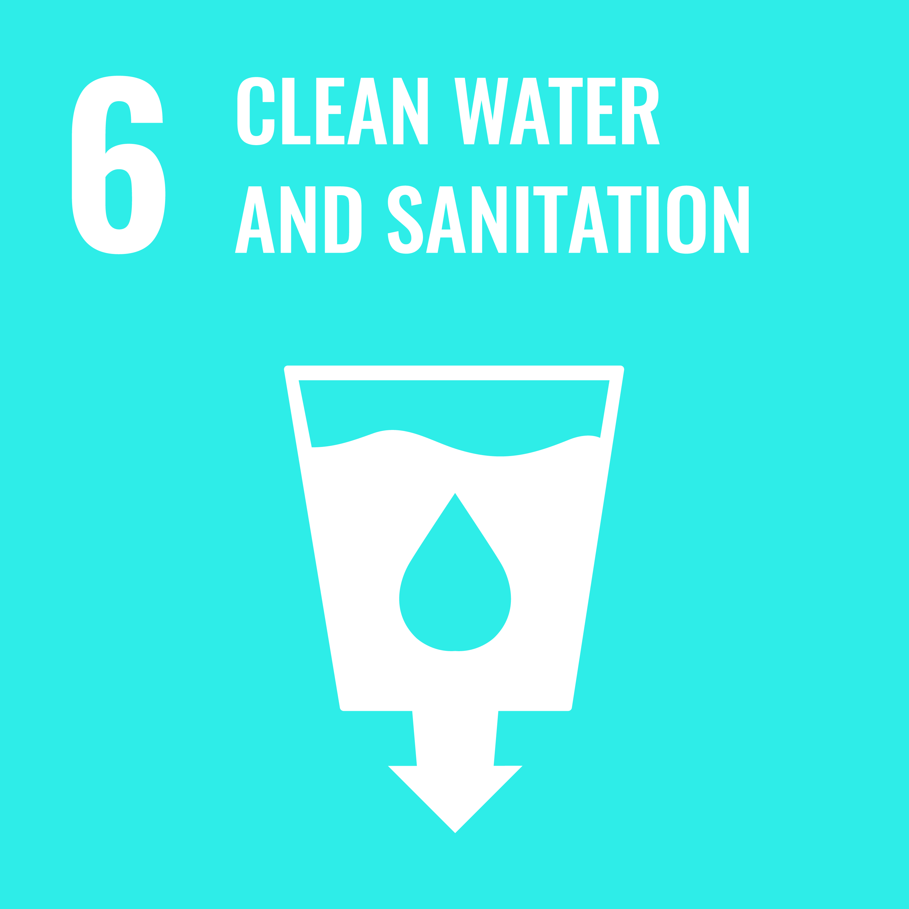

TUSTOCK is an agribusiness exporter company that is committed to sustainable agriculture and responsible resource management. We believe that our work can contribute to several United Nations Sustainable Development Goals (SDGs) and support climate action initiatives.
SDG 2: Zero Hunger
TUSTOCK's focus on agriculture and exportation of agricultural produce contributes directly to SDG 2, which aims to end
hunger, achieve food security, and improve nutrition. By promoting sustainable farming practices, optimizing crop
production through technology, and facilitating market access for farmers, TUSTOCK helps enhance food availability and
accessibility, reducing food insecurity in the regions we operate.

SDG 6: Clean Water and Sanitation
TUSTOCK's commitment to water conservancy aligns closely with SDG 6, which aims to ensure access to clean water and
sanitation for all. By implementing water-saving technologies and advocating for responsible water usage in agriculture,
TUSTOCK contributes to conserving water resources and promoting sustainable water management practices, addressing water
scarcity and quality challenges.
SDG 7: Affordable and Clean Energy
While TUSTOCK's primary focus is on agriculture, its adoption of technology in operations can contribute to SDG 7, which
seeks to ensure access to affordable, reliable, sustainable, and modern energy for all. By integrating energy-efficient
practices and exploring renewable energy options, TUSTOCK can reduce its carbon footprint and support the transition to
cleaner energy sources.
SDG 8: Decent Work and Economic Growth
As an agribusiness exporter company, TUSTOCK contributes to SDG 8 by creating employment opportunities and fostering
economic growth in the regions we operate. By empowering local farmers and agribusinesses through market connections and
value addition initiatives, TUSTOCK helps build sustainable livelihoods and supports economic development.
SDG 9: Industry, Innovation, and Infrastructure
TUSTOCK's emphasis on technology in our operations aligns with SDG 9, which focuses on building resilient
infrastructure, promoting sustainable industrialization, and fostering innovation. By integrating technology into
agricultural practices, TUSTOCK enhances efficiency, productivity, and resilience in the agricultural sector.
SDG 12: Responsible Consumption and Production
TUSTOCK's focus on sustainable agriculture, value addition, and exportation aligns with SDG 12, which promotes
responsible consumption and production patterns. By promoting sustainable farming practices, minimizing waste along the
supply chain, and adhering to ethical and environmentally friendly production standards, TUSTOCK contributes to reducing
the environmental impact of our operations.
SDG 13: Climate Action
TUSTOCK's efforts in water conservancy, sustainable agriculture, and the use of technology demonstrate our commitment
to climate action (SDG 13). By implementing climate-smart agricultural practices, reducing greenhouse gas emissions, and
conserving natural resources, TUSTOCK contributes to mitigating the impacts of climate change and building climate
resilience in the agricultural sector.
Overall
TUSTOCK's approach as an agribusiness exporter company that emphasizes water conservancy and uses technology in our
operations aligns with several key SDGs and climate action initiatives. Through sustainable agriculture, responsible
resource management, and technological innovation, TUSTOCK plays an essential role in contributing to a more sustainable
and resilient future, both for our stakeholders and for the broader global community.
Visit TUSTOCK today to learn more about how we can help you make better investment decisions and
adopt more sustainable
farming practices.